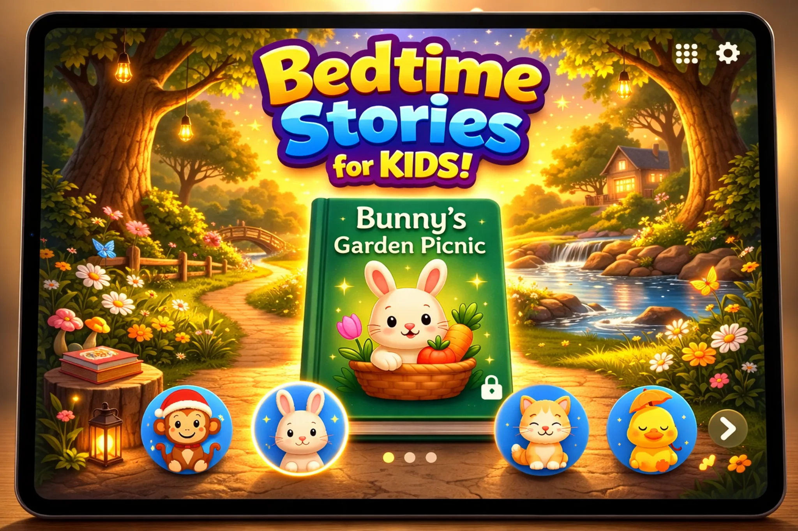

Bedtime stories offer more than simple entertainment. They help children relax, improve sleep habits, build emotional connection with parents, and support early learning in a calm and comforting way.
A consistent bedtime story routine can make evenings feel more peaceful and predictable. For many families, just a few quiet minutes of reading before bed can help children slow down and transition more easily into sleep.
Bedtime stories create a predictable routine that signals the brain it is time to rest. When children know that bath time, pajamas, and a calm story come before sleep, bedtime often feels easier and less stressful.
Gentle storytelling also reduces stimulation before sleep. Instead of bright screens or noisy activities, bedtime reading creates a softer and more peaceful atmosphere.
Stories help children recognize feelings, understand situations, and feel safe. Calm bedtime stories can also help kids process worries from the day and end the evening with a reassuring emotional tone.
Children often respond well to bedtime stories because they combine comfort, attention, and a sense of safety all at once.
Listening to stories improves vocabulary, sentence understanding, and communication skills. Even simple bedtime reading introduces children to new words and helps them become more familiar with language patterns over time.
Bedtime stories encourage imagination in a calm setting. As children listen, they learn to picture scenes, follow simple story flow, and stay engaged for short periods of time. This supports both creativity and focus.
Bedtime reading strengthens the parent-child relationship. Reading together gives families a quiet moment of connection at the end of the day, and that emotional closeness can make bedtime feel warmer and more secure.
Read-aloud bedtime stories are especially helpful because they combine voice, rhythm, and story structure in a way that feels soothing. Many families find that calm narration helps children settle even faster.
Bedtime Story Books – Cozy Tales offers calming read-aloud bedtime stories with 2 free books and no subscription.
The benefits of bedtime stories go far beyond reading practice. They support better sleep, emotional security, language growth, imagination, and family bonding. A short, calm bedtime story can become one of the most valuable parts of a child’s nighttime routine.